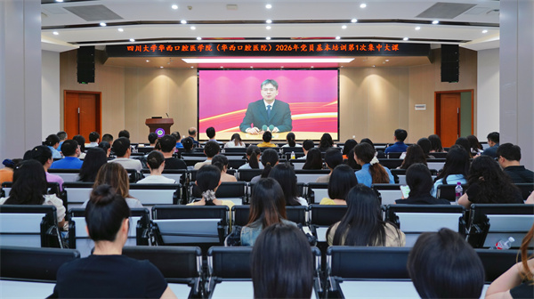

学院通知 · 教学通知
我院举行2026年党员基本培训第一次集中大课
发布时间：2026/06/15
按照学校统一部署安排，6月12日，我院举行2026年党员基本培训第一次集中大课，全院党员学习观看中央党校（国家行政学院）副校长（副院长）张忠军教授“深入学习贯彻习近平总书记关于党性重要论述，加强党性修养”视频课程。本次大课我院在教学楼、华西第四教学楼（牙科楼）、望江校区教室等场地共设11个分会场。 张忠军在报告中从党性的基本含义、党性的新时代要求、党性修养的意义、党性修养的路径四个方面，系统解读了习近平总书记关于党性的重要论述精神，引导广大党员深学细悟，把握核心要义，将党性修养内化于心、外化于行。他强调，党性是党员干部立身、立业、立言、立德的基石，是党员身上党的本质属性的直观体现。新时代新征程，广大党员要坚定拥护“两个确立”、坚决做到“两个维护”，真正做到信念过硬、政治过硬、责任过硬、能力过硬、作风过硬，以实际行动践行对党忠诚的铮铮誓言。要把党性修养作为党的建设的永恒课题和党员干部的终身课题，强化理论武装、坚定理想信念、对党绝对忠诚、站稳人民立场、严守纪律规矩、勇于自我革命，在严肃党内政治生活和实践锻炼中淬炼党性，永葆共产党人政治本色。 课后广大党员纷纷表示，此次大课是一次深刻的思想淬炼与精神洗礼，通过学习进一步深刻认识到，加强党性修养是终身课题，必须常抓不懈、久久为功。接下来将持续把对党忠诚融入血脉、铸入灵魂，以更加饱满的热情、更加务实的作风，踔厉奋发、实干笃行，切实把学习成效转化为推动学院高质量发展的强大动力，为加快推进“华西医学整体率先迈入世界一流”贡献更多力量！ 标签：
